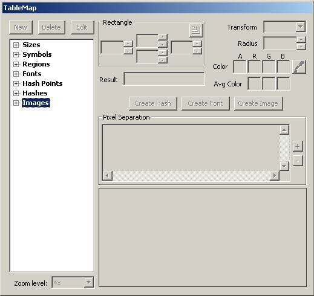

Hashing Images
Using hash-values is the most easy way to recognize images. They are applicable whenever images get displayed in a fixed way. “Fuzzyness” like small changes in size and colour can’t be handles with hashes. They require fuzzy fonts and cause more work, both for the creator of the map and at run-time. For this example we take a scraper-friendly casino.
First find the region box that contains the image that you wish to collect, and select the "Create Image" tab.

The pop up box for the name will appear. Give your image the proper name.

Go to the left side of Open Scrape and open the images tree and find your newly created image and select "Create Hash".


In most cases the hash value will be unique. Collisions can happen, but are extremeley rare. If that is the case you have to change your regions so that all images get an unique hash-value for identification.
Now select your hash type from the new pop up box. Generally starting with Hash0.

Go back to the Edit Menu on the Open Scrape Tool Bar and select "Update Hashes" from the drop down menu. Confirm the process was succesfull by clicking on the box that contained the origional image. As soon as you have selected the region OpenScrape should show you the desired result: the cards name, in our case nine of hearts.